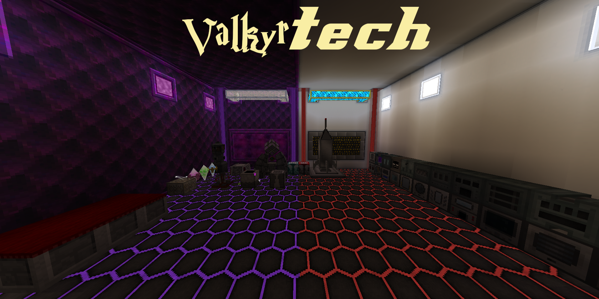

What Is ValkyrTech
ValkyrTech is a Minecraft 1.7.10 modpack focused around The mods by Reika Kalseki.
Design Philosphy
- Automation first: if you need to make more then one you can automate it
- Multiplayer Compatible: must work in Multiplayer both technically and conceptually
- Integration Between mods: as many mods as possible are integrated to encourage progression within Reika's mods
- Seperate progression paths: magic and tech can combine in useful ways but crossover isnt enforced
Unique Features
- Features Mods by Reika Kalseki including but not limited to:
- Rotarycraft
- Reactorcraft
- Electricraft
- Chromaticraft
- Satisforestry
- Geostrata
- Progression through mods is built around Reikas mods:*
- Magic: Chromaticraft forms the core of magic progression, and allows you to progress in other magic mods
- Tech: Rotarycraft and its addons are the core of tech you must work through it to unlock other tech mods
- Custom Items: new alloys, new components, and new tools*
- Custom Underground: Oregen and cavegen have been reworked to make manual resource gathering less boring*
- Custom Dimensions: new worlds to explore, be it the aftermath of industry or magic gone awry*
- Custom Structures: ruins full of useful resources and special loot rather than useless junk*
- Custom Machines: new multiblocks allowing for expanded production and special mechanics*
- Custom Textures: an optional texture pack that reworks textures to fit the style of reikas mods*
- Custom Recipes: to bring all of the content together
- *indicates content that is planned but may not be fully implemented.
Links